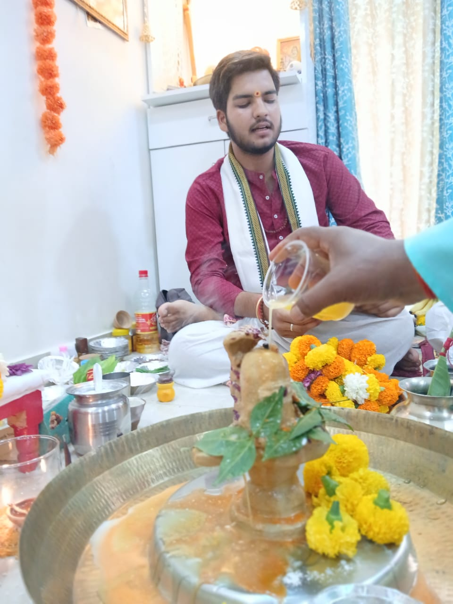
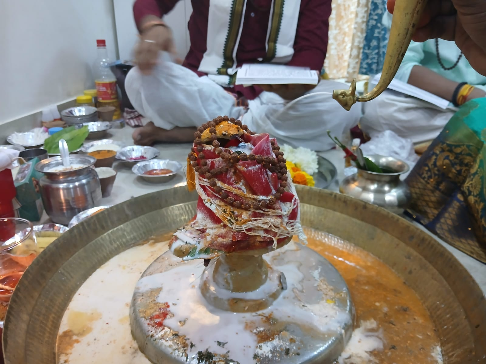
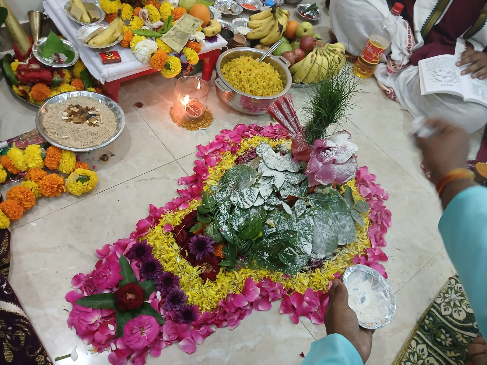
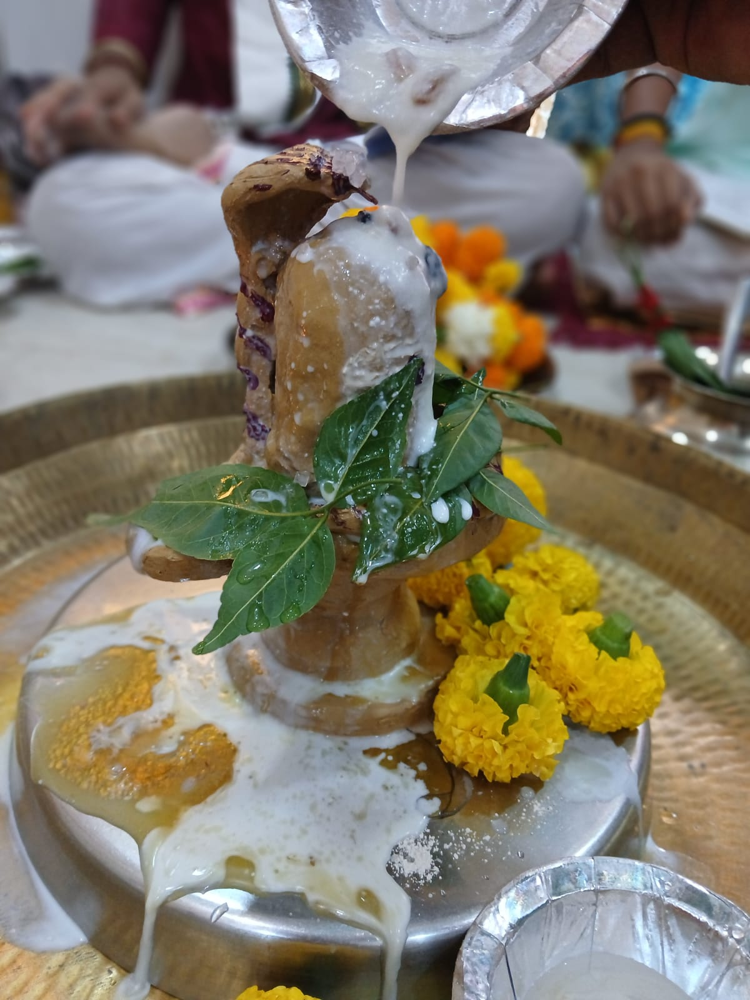
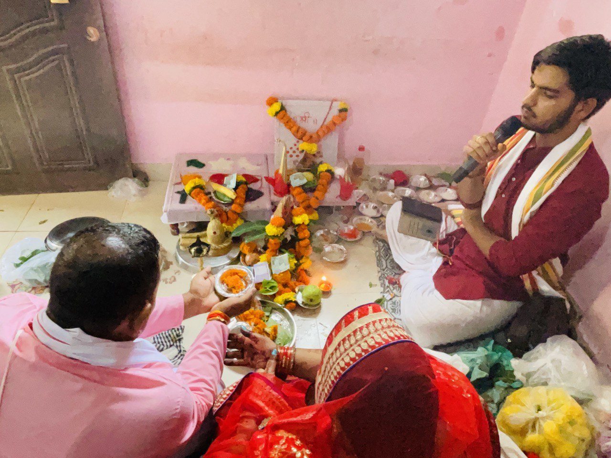

Rudrabhishek
Invoking Lord Shiva's blessings for peace, health and spiritual upliftment through sacred abhishekam.
Learn More →
Experience the Divine
Performed by learned Vedic priests carrying traditions older than the city of Kashi itself — for peace, prosperity, healing and spiritual growth.
What We Offer
Each ceremony is performed exactly as prescribed in the Vedic scriptures — nothing shortened, nothing improvised.
Invoking Lord Shiva's blessings for peace, health and spiritual upliftment through sacred abhishekam.
Learn More →
Powerful Vedic chanting for protection, healing and longevity, recited by experienced pandits.
Learn More →
Sacred worship of Mother Ganga on her banks, for purification, gratitude and divine blessings.
Learn More →
An auspicious ceremony for family harmony, prosperity and divine grace, ideal for new beginnings.
Learn More →
Rituals to pacify the nine planetary influences (Navagraha) and restore balance in life.
Learn More →
A classical fire ritual for peace, prosperity and the removal of negative energies from your life.
Learn More →
Ancestral rituals for the peace of departed souls and the well-being of the family lineage.
Learn More →
A personalized evening Aarti experience on the ghats, arranged exclusively for you and your family.
Learn More →
About Kashi & Us
Varanasi — known since antiquity as Kashi — is regarded as one of the oldest continuously living cities in the world, and the spiritual heart of Hindu tradition. Pilgrims have walked these ghats for thousands of years to seek the blessings of Mother Ganga and Lord Shiva.
Sacred Kashi connects travelers and seekers, both Indian and international, with trained, lineage-trained Vedic priests who perform every ceremony with complete authenticity — explained in plain English, so you understand the meaning behind every mantra and offering.
How It Works
Message us on WhatsApp or fill the contact form with your dates and what you're seeking — healing, blessings, remembrance, or celebration.
Based on your intent and dates, we suggest the right ceremony and priest, and explain everything in clear English.
We confirm timing on an auspicious muhurat, arrange materials, and guide you on what to bring or wear.
Arrive at the ghat or temple — we handle the rest, from the priest to the offerings, start to finish.
Moments From Kashi






Kind Words
"We had no idea what to expect, but the priest explained every step in English and made the whole Rudrabhishek deeply meaningful. An experience we'll never forget."
"Booking was easy over WhatsApp, communication was clear, and the Ganga Aarti they arranged for our family was private and incredibly peaceful."
"Completely authentic — nothing felt like a tourist show. The Pitru Tarpan ceremony for my late father was handled with so much care and respect."
"Transparent pricing, no pressure, and a genuinely knowledgeable team. Sacred Kashi made our spiritual trip to Varanasi the highlight of our India journey."
Good to Know
Not at all. Every ceremony is explained step-by-step in clear English before and during the ritual, so you understand its meaning even if this is your first time.
We recommend booking at least 2–3 days in advance to secure an auspicious time (muhurat) and the right priest, though we do our best to accommodate shorter notice via WhatsApp.
Yes. We share the complete cost — priest fees, materials and offerings — before you confirm, with no hidden charges added later.
Absolutely. Many travelers book a ritual to mark a birthday, anniversary, recovery from illness, or in remembrance of a family member. Tell us the intent and we'll recommend the most fitting ceremony.
The fastest way is WhatsApp at +91 93054 33808, or you can fill out the contact form below and we'll respond promptly.
Get In Touch
Tell us a little about what you're seeking, and we'll help you plan the right ritual, on the right day, with the right priest. We typically respond within a few hours.